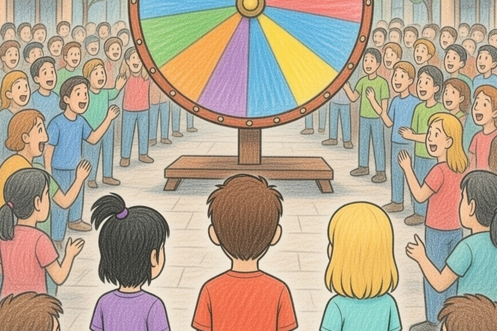
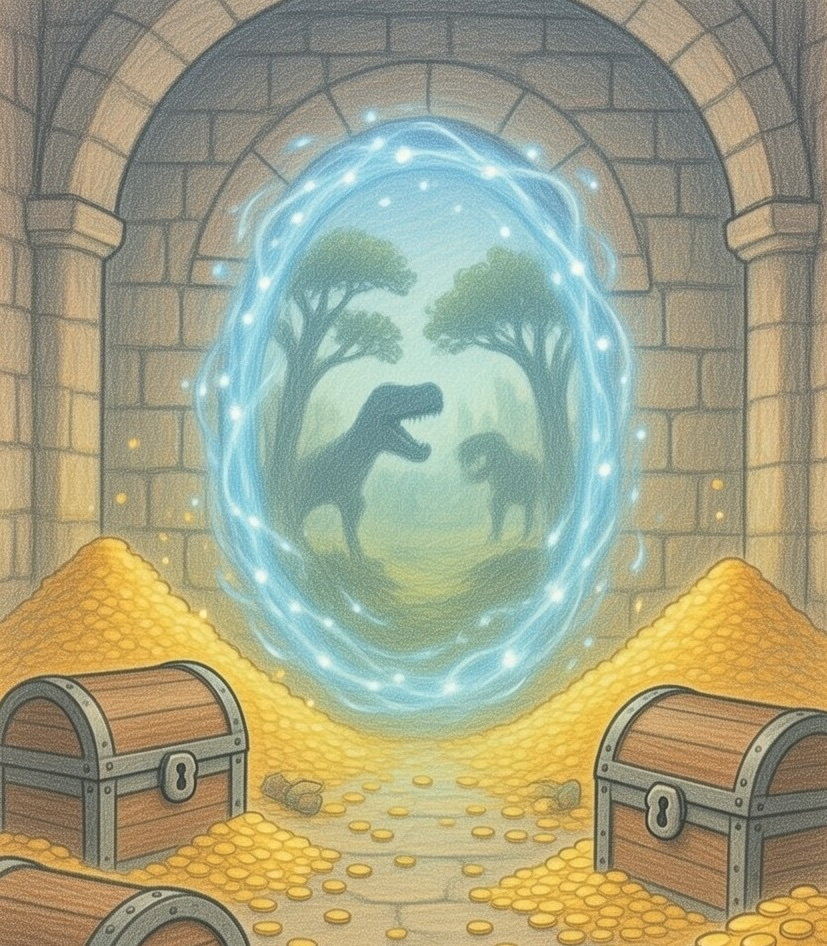

Chapter 1
The Lucky Win
Once upon a time, there was a family of five, a mother, father, and three children, Ruby, Anna, and Andrew. The small house they lived in was very pleasant. The children had friends just across the street that they loved to play with. Their neighborhood was just lovely, and everyone was so nice. One morning the little family got some exciting news in the mail. The King and Queen were going to spin a wheel with everyone in the town’s name on it to see who gets to visit their castle. The event would take place at the town park Friday at 3:00 p.m.
The kids were so excited! It was Wednesday, so it was coming up soon! That night, the kids couldn’t sleep. They stayed up thinking about it. On the day of the wheel spin, the kids got up early and couldn’t wait till 3:00. Shortly before 3:00, they started walking to the park and made it just in time to see the wheel spin. The little family of five were the lucky winners!

The next day they would get to go to the castle! They got to spend the whole day there! Saturday morning, when they got there, the King and Queen had one important rule, the rule was not to go in the room at the end of the main hall. After they said the important rule, the kids started roaming the beautiful castle while their parents talked to the King and Queen.
The kids had so much fun, they went in every room, except the one at the end of the main hall.
“I really want to go in the room the King and Queen said not to go in, it could have awesome stuff in it.” Ruby said.
“I want to too, what about you Anna?” Andrew asked.
“The King and Queen said no, so we should not go in there.” Anna told them, but from the looks of their faces, she had to go with them. In the room they went.

Once they got inside, they saw something weird looking. After a few seconds, Ruby, Andrew, and Anna were sucked away! They got taken millions of years back!
When they arrived Anna asked “Are those things in the distance dinosaurs?”
“I believe so.” Andrew said.
“Oh great, dinosaurs.” Ruby groaned.